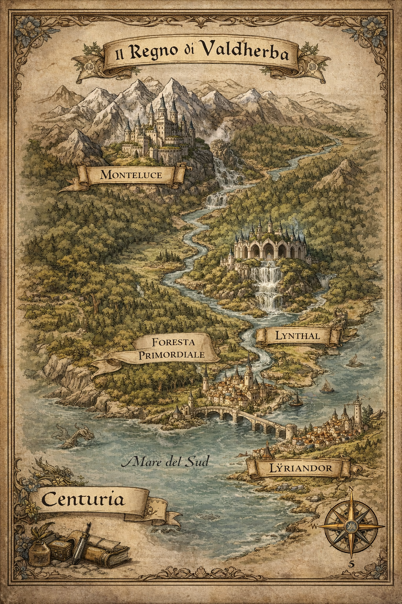
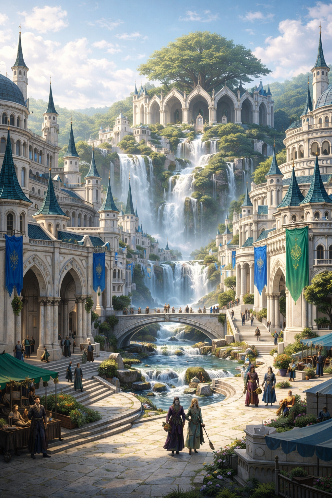

Valdherba è una terra prosperosa ai confini meridionali del continente di Centuria, dove la conoscenza della cura e della guarigione è considerata sacra. Grandi foreste incontaminate ricoprono il territorio e offrono erbe rare, piante antiche e risorse alchemiche che hanno reso il regno celebre in tutta Centuria.
Non è un regno di conquista né di guerra: Valdherba esiste per sanare, preservare e tramandare. La sua forza non risiede nelle armate, ma nella profondità di un sapere accumulato per generazioni.
Al cuore del reame vi è il Consiglio delle Cinque Casate, eredi dirette delle madri fondatrici che guidano Valdherba da generazioni. Il potere si tramanda di figlia in figlia: non per sangue reale, ma per conoscenza e dedizione alla cura.
Le cinque casate incarnano discipline diverse — erboristeria, alchimia, guarigione spirituale, magia protettiva, studio dei veleni — e insieme compongono un sapere completo che nessuna singola famiglia potrebbe possedere da sola.
Nel corso dei secoli le Cinque Casate hanno fondato scuole e accademie in tutto il regno, con l'obiettivo di diffondere il sapere originario e formare nuovi guaritori. Chiunque mostri talento e dedizione può aspirare a diventare un curatore al servizio di Valdherba e dei bisognosi.

Valdherba si estende ai confini meridionali del continente di Centuria. Dal nord, protetta da una piccola catena montuosa, nasce il fiume Lýriam, che attraversa il cuore verde del reame fino alle pianure meridionali, dove sfocia nel Mare del Sud.
Le grandi foreste incontaminate che coprono buona parte del territorio non sono semplice paesaggio: sono la vera ricchezza di Valdherba, fonte inesauribile di erbe rare, piante antiche e risorse alchemiche.
La capitale del reame, cresciuta nel cuore verde delle foreste in simbiosi con la natura. Sede del Consiglio delle Cinque Casate e delle principali accademie del regno.
Roccaforte difensiva nel nord del reame, costruita a ridosso della catena montuosa che protegge Valdherba. Presidio militare guidato da chierici e maghi addestrati nelle accademie.
Centro commerciale e culturale sulle pianure meridionali, lungo il corso finale del fiume Lýriam. Punto di scambio per erbe, pozioni e conoscenze con il resto di Centuria.
Al centro del reame si estende la Foresta Primordiale, un territorio antico e denso dove le piante più rare crescono indisturbate da secoli. L'accesso è regolamentato dal Consiglio: solo i guaritori certificati e i druidi delle casate possono raccogliervi risorse.

Lynthal sorge nel cuore verde del reame, una città cresciuta in simbiosi con la natura. Le sue torri bianche si innalzano tra cascate e alberi secolari; i canali alimentati dal Lýriam attraversano strade e piazze, portando acqua pura al centro di ogni quartiere.
L'architettura rispecchia i valori del regno: spazi aperti, giardini medicinali curati dalle casate, sale di studio accessibili a tutti i cittadini con talento e volontà di apprendere.
Al centro della capitale si trova il Palazzo del Consiglio, sede delle Cinque Casate. Non è una fortezza né una reggia, ma un edificio aperto, con grandi sale di consultazione e archivi che custodiscono secoli di conoscenza accumulata dalle madri fondatrici.
È qui che le cinque matriarche si riuniscono per governare il reame, risolvere dispute tra le casate e decidere il futuro di Valdherba.
Lynthal ospita le più importanti accademie del reame: scuole di erboristeria, laboratori alchemici, ospedali sacri e scuole di guarigione spirituale. Studenti da tutto Centuria arrivano nella capitale per apprendere le arti curative di Valdherba.
In principio vi erano cinque famiglie di antichi sciamani che decisero di unire le loro conoscenze e fondare un regno. Ognuna portava una disciplina unica e insostituibile; insieme, le cinque casate formavano un sistema di cura completo e bilanciato.
Alla loro dipartita, il potere è passato di figlia in figlia fino al giorno d'oggi. Le eredi attuali possiedono tutta la conoscenza delle casate fondatrici, custodita e arricchita da ogni generazione.
Conoscitrici di erbe medicinali e piante rare. Custodi della Foresta Primordiale e guide spirituali nel rapporto tra Valdherba e la natura.
Creatrici di elisir curativi, distillati e pozioni sanificatrici. Gestiscono i principali laboratori alchemici del reame e formano nuovi preparatori.
Maestre della guarigione dell'anima e dello spirito. Si occupano di mali che vanno oltre il corpo fisico — maledizioni, traumi arcani, afflizioni dell'essenza.
Incaricate della protezione del regno. Comandano i chierici e i maghi difensivi, e gestiscono le accademie di magia protettiva nelle grandi città.
Studio dei veleni e delle relative antidoti. Una conoscenza doppia e delicata: per curare chi è avvelenato, bisogna prima capire il veleno stesso.
Il Consiglio delle Cinque Casate governa Valdherba per consensus: le decisioni più importanti richiedono l'accordo di almeno quattro casate su cinque. Nessuna famiglia detiene un potere assoluto sull'altra, e questa struttura ha garantito al reame secoli di stabilità e cooperazione.
Le difese di Valdherba sono affidate principalmente a maghi e chierici, addestrati nelle accademie del regno e sottoposti agli ordini diretti del Consiglio. La loro forza risiede nella protezione, nel controllo e nella capacità di sostenere i propri alleati in battaglia.
La roccaforte di Monteluce presidia il confine nord, dove la catena montuosa offre protezione naturale. Lýriandor, con la sua posizione meridionale, mantiene un contingente difensivo lungo le vie commerciali del Mare del Sud.
Di recente, Centuria è stata sconvolta da una guerra sanguinosa per il controllo di un nuovo continente inesplorato. Valdherba vi ha preso parte per assicurarsi l'accesso a nuove risorse utili alla cura: piante sconosciute, minerali alchemici vergini, e conoscenze curative mai incontrate prima.
Il Consiglio ha inviato un contingente di guaritori e maghi protettivi, con l'obiettivo non di conquistare, ma di esplorare, catalogare e stabilire accordi commerciali con chiunque si trovasse nel nuovo mondo.
In un continente dilaniato da conflitti, Valdherba possiede una risorsa che ogni fazione desidera: la capacità di curare. Questo ha reso il regno tanto prezioso quanto vulnerabile. Il Consiglio naviga con cautela tra alleanze e richieste, consapevole che il sapere delle Cinque Casate è il vero tesoro da proteggere.